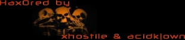
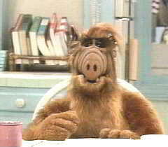

Why? Mainly because it's fun, but also because we can. Fear.
The internet is going to hell. It's progressing so fast, it's bringing in all types. It's bringing in newbie script-kiddies, it's bringing in money-hungry corporations and businesses, it's bringing in rat bastards period. Everybody's trying to a get a piece. The saddest thing is, it's only going to get worse. That's a terrible thing for those who have been involved in the internet and the hacking scene for so long. And with that said, we leave you with words of wisdom from The Posse..
-----
Ecosystems do not grow without antagonists. The internet (like it or not) has become a
virtual ecosystem that would wither and die were it not for the intervention of hackers.
Corporate America has entered this ecosystem like a viral fungus, growing ugly clusters of
.com decay, spreading misinformation like wildfire and causing the natural predators to be
removed from the ecosystem in which they provide a necessary function.
Corporate America must be removed.
It's us or them.
Take a look at the concrete wastelands that Corporate America has built upon the earth
outside your windows. Beneath that concrete there is soil wasted, soil that breeds life.
They are trying to do the same thing to the internet.
Go outside and try to breathe for just a moment... That stale thickness in the air that
threatens to choke you is the poison spewing from their smokestacks... Did you just cough?
The phlegm in your throat are their poisons and do you charge them rent ? Did you charge
them storage fees for acting as a receptacle for their toxic waste?
They are destroying the world we built to escape the one they have already destroyed!
Corporate America will trade 10 years (minimum) of your life in exchange for another $10
in profits. Their poisons, their stifling concrete morgues, their so called "progress"...
They never knew the rules, they followed you here to stalk you... To bilk you for $10
they came here because you did. Then when you got in the way of their "progress" they
fabricated losses in order to gain FBI attention. They abuse the system and steal your
freedoms.
-----
Shouts [from xhostile] go out to MetalTung, IL and the old/real HcVorg, Devil-C, phumpy, Berkeley, m1crochip and F0rpaxe, opt1k, xSuiCidEx, Redemption, DragonSpyre, kM and hackerzclub and LoU when they were around, Silicon Toad and HDC, Ken and the old and new PSS, zmonkey [wherever you are], PhiBeR, Tophat and mobsters, Jouser and Sys7, Delirium and SIN, and everyone else. Special shouts go out to Zyklon [I hope you're doing ok], and PHC [you're fighting for a good cause; keep it up].
Shouts [from acidk|own] go out to attrition, fuqrag, PHC, L7, gH, 2600, Jericho and McIntyre, PLA, HNN, some other ppl...
Shots [from both of us.. and we don't usually do this but this is a special occasion] go out to Uneek Technologies, what the fuck are you starting shit for? You lame bitches, you've used msadc.pl in the past. But regardless, you're still just some lame kids. Fuck ya'll. And just to clear this shit up, xhostile sploited msadcs.dll on oak.edu and only oak.edu. Just because he usually echos the page instead of overwriting it doesn't mean he uses msadc.pl. Ya'll can suck our nuts. Other shots go to zeroc, DoubleT and Hacktic for being lame, dalnet idling, nerdyass wannabe thugs. Lastly, shots go to Infra Red and the Progenic kiddies.. you're next.
To the sysop, simply overwrite default.htp with index.bak to restore this page. No sensitive data was accessed and nothing was altered. You can email us at rooted@hushmail.com and we will help you secure your box.

Your 0wner--^